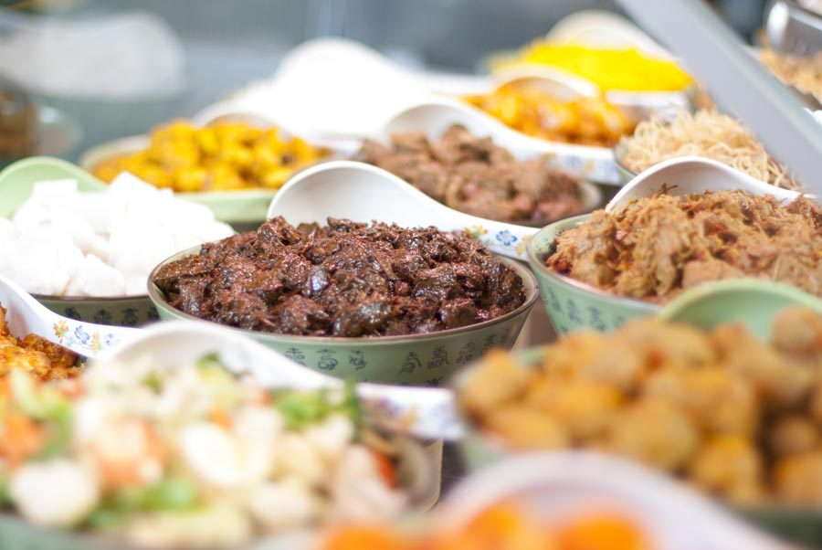
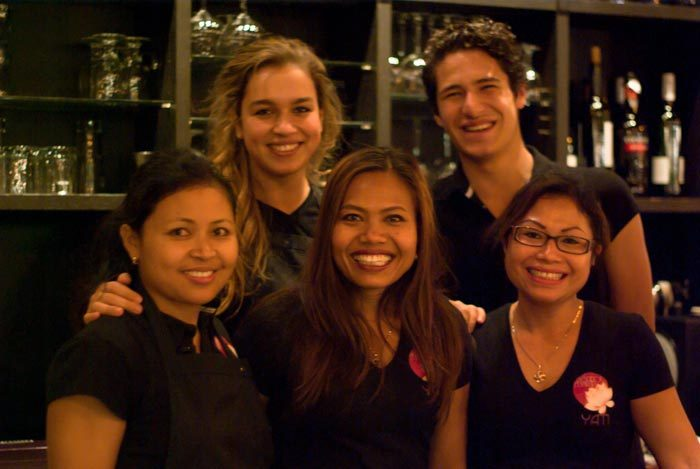
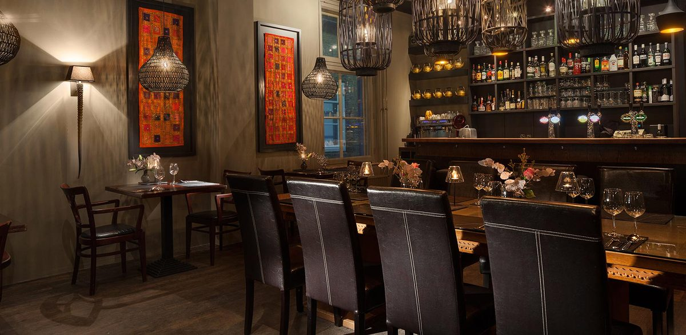
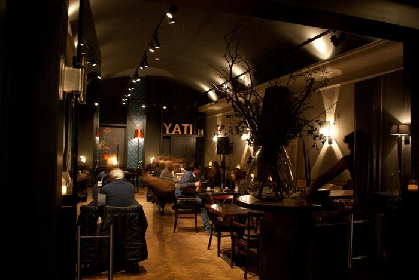
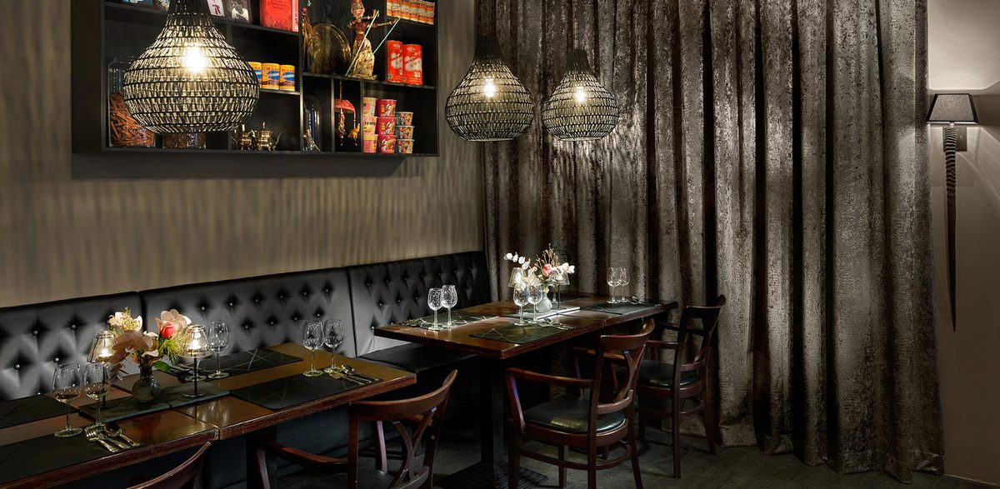

Rijsttafel Yati
De klassiekers: rendang, ayam opor, babi ketjap en sate met huisgemaakte satesaus.
€ 32 p.p.Bekijk gerechten

Javaanse gerechten, op de traditionele manier bereid met grove oosterse kruiden en dagverse producten. Kom eten in het restaurant, haal af of laat ons koken voor uw feest.
De beste manier om de Indonesische keuken te leren kennen: van alles een beetje, samen aan tafel.
De klassiekers: rendang, ayam opor, babi ketjap en sate met huisgemaakte satesaus.
Met geit, krokante eend en sate van garnaal. Voor wie net iets anders wil.
Gerechten uit Yogyakarta: gudek van jackfruit, babi panggang en sate yogja.
Zes soorten sate, van geit en garnaal tot kippendij en spek, met groenten erbij.
Volledig vegetarisch, met rendang van jackfruit, tempé en sate van tahu.
Met atjar, seroendeng en tempé mendoan, en rijst, bami of mihoen naar keuze.
★★★★★"I tried several Indonesian restaurant across the NL, and I'd say that this is one of the best (I'm Indonesian!!)"
★★★★★"The food here is authentic and wonderful. It's run by Indonesians."
★★★★★"The food is very tasty, fried snacks are light and crunchy, special rice table was a good choice"

Zo oorspronkelijk mogelijk bereid. Dat kost meer werk, maar je proeft het.
Pondok makan is Indonesisch voor eethuis. Sinds begin 2012 smullen gasten hier van traditionele Indonesische gerechten. De basis is de Javaanse keuken, aangevuld met gerechten uit andere delen van Indonesië en af en toe een klassieker uit de buurlanden.
Yati, chef en eigenaar, komt uit Midden-Java en volgde daar deels haar horecaopleiding. Zij kookt de originele gerechten zoals ze bedoeld zijn.
Proef Yati ook thuis. Alles wordt elke dag vers bereid in onze eigen keuken.
Al onze gerechten kunt u afhalen in het restaurant, elke dag van 17:00 tot 20:00. Bestellen gaat telefonisch.
Een verjaardag, jubileum of bedrijfsfeest? Wij koken voor uw gasten.
Warm, sfeervol en net zo geschikt voor een etentje met z'n tweeën als voor een zakelijk diner.



Laat weten wanneer u wilt komen en met hoeveel personen. We bevestigen uw reservering zo snel mogelijk.
Voor reserveren, afhalen of catering.